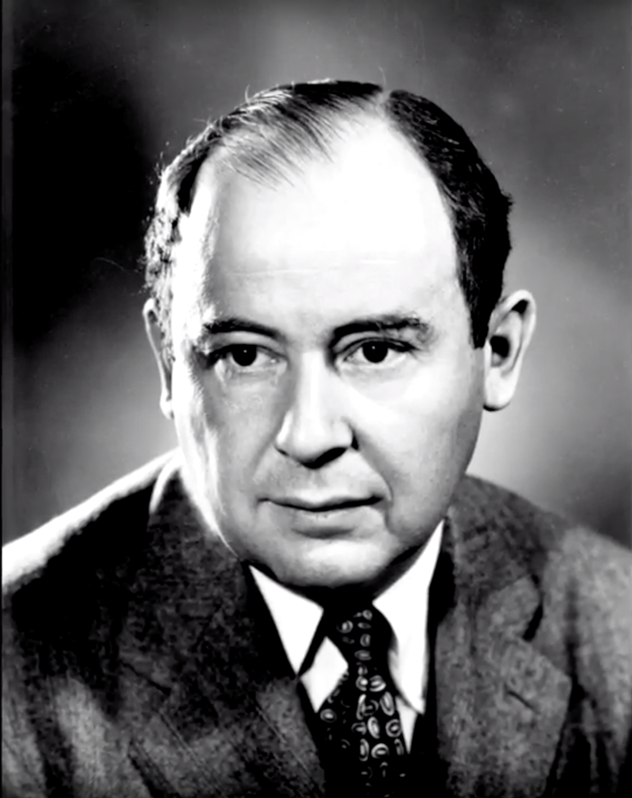

John Von Neumann
Early years (1903-1921)
Neumann János Lajos (John Louis Neumann in English) was born (or “arrived”) on December 28th 1903 in Budapest, Hungary. Born to wealthy non-observant Jewish bankers, his upbringing can be described as privileged. His father held a doctorate in law, and he grew up in an 18-room apartment on the top floor above the Kann-Heller offices at 62 Bajcsy-Zsilinszky Street in Budapest (Macrae, 1992)